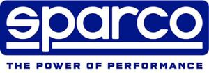

Trade Mark Journal No.2025/044 31 October 2025
WO0000001881563 (9,12,25)
Office of origin: Italy
Date of International Registration:20 March 2025
Date of designation in the UK:
20 March 2025

The trademark consists in the wording SPARCO THE POWER OF PERFORMANCE in special script, on two lines and in blue and white colors.
The mark contains the colours blue and white.
International priority date claimed: 26 September 2024
(European Union Intellectual Property Office (EUIPO))
(19084220)
- Class 9
- Racing equipment for protection against accidents being gloves, helmets, dungarees, shoes; safety clothing; safety footwear; racing frames being a part of car racing training simulators; life belts; clothing for protection against accidents; protective footwear; helmets for protection against accidents, radiation and fire; visors for protection against accidents, radiation and fire; anti-glare visors; work overalls for protection against accidents, radiation, and fire; balaclavas for protection against accidents, irradiation and fire; socks for protection against accidents, irradiation and fire; trousers for protection against accidents, irradiation and fire; bustiers for protection against accidents, irradiation and fire; shoes for protection against accidents, irradiation and fire; boots for protection against accidents, irradiation and fire; gloves for protection against accidents, irradiation and fire; jackets for protection against accidents, irradiation and fire; knee pads for protection against accidents, radiation and fire; elbow guards for protection against accidents, radiation and fire; protective collars; protective sleeves; eyewear; sunglasses; masks for protection against accidents, radiation and fire; intercoms; time and date recording apparatus; telemetering apparatus; range finders; pressure gauges; instrumentation simulators; vehicle driving simulators for training purposes; simulators for the steering and control of vehicles; electronic sports training simulators; mouse pads; cables, electric; fire extinguishing apparatus; vehicle antennas; scientific, photographic, optical, measuring and signalling apparatus and instruments; apparatus and instruments for conducting, switching, transforming, accumulating, regulating or controlling the distribution or use of electricity; apparatus for recording, transmission or reproduction of sound or images; CD's, DVD's; calculating machines and computers; software; downloadable virtual goods, namely clothing, footwear, headgear, fittings for automobiles, car components, steering wheels, push scooters [vehicles], seating, chairs, safety harness, protective helmets, the aforesaid goods for use online and in online virtual worlds; downloadable virtual goods, namely safety footwear for protection against accident or injury, protective clothing for protection against accident or injury, protective suits against accident or injury, safety gloves for protection against accident or injury, the aforesaid goods for use online and in online virtual worlds; downloadable virtual goods, namely bags, umbrellas, backpacks, sunglasses, key cases, badge holders, the aforesaid goods for use online and in online virtual worlds; computer software, downloadable; downloadable software; downloadable computer software for use in displaying, monetising, purchasing, selling, trading, clearing, confirming and authenticating digitised assets and non-fungible tokens (NFTs); downloadable software for managing digital collectables; downloadable software for archiving blockchain-based data; downloadable software for facilitating blockchain-based financial transactions; downloadable software for data authentication via blockchain; downloadable digital media, namely, digital collectibles created with blockchain-based software technology; downloadable electronic data files authenticated by non-fungible tokens (NFTs) and other application tokens; downloadable augmented reality software; downloadable virtual reality software; downloadable mixed reality software; downloadable game software; downloadable digital files containing images, text, videos and/or musical collectables.
- Class 12
- Safety restraints for use in vehicles, parts and fittings for vehicles; vehicle tow straps and wheel tie downs (vehicle); wheels; accessories for vehicles, namely air pumps; push scooters [vehicles]; vehicle seats; vehicle wheels; vehicle roll bars; rims for vehicle wheels; reinforcement bars for suspensions of land vehicles; armrests for automobile seats; safety belts for vehicle seats; backrests for vehicle seats; coverings for car seats; head-rests for vehicle seats; fitted protective seat covers for vehicles; gear shift covers; covers for vehicle steering wheels; pads adapted for safety belts for vehicles; padded covers for handbrake handles; sill guards; sun visors [vehicle parts]; vehicle frames; seat safety harnesses for cars; cushions adapted for use in vehicles; steering wheels for vehicles; vehicle covers [shaped]; protective vehicle covers [shaped]; gear shift levers for motorcycles; gear lever knobs for land vehicles; tire bags; protective heat shields for vehicles; restraints for use with vehicle safety belts; lug nuts for vehicle wheels; forks [bicycle parts]; front forks for two-wheeled vehicles; hood shields as structural parts of vehicles; mudguards for automobiles; pilot footrests for vehicles; brake pedals for vehicles; vehicle bonnet pins; friction clutch driven plates for land vehicles; vehicle booster seats for children; parts and fittings for land vehicles; buggies; blinds adapted for vehicles; linings for vehicles; interior panels for vehicles; luggage nets for vehicles; sun visors for automobiles; automobile windscreen sunshades; motorcycle pedals; cars pedals; foot pegs for motorcycles; foot pegs for cars.
- Class 25
- Leisure wear; casual wear; footwear; work clothing (polo shirts, sweatshirts, gloves, work overalls); overalls; jerseys [clothing]; sweatshirts; ski masks; leotards; trousers; headwear; stockings; tee-shirts; polo shirts; shirts; shoes; sports shoes; leisure shoes; dress shoes; galoshes; sneakers; deck shoes; half-boots; gloves [clothing]; jackets [clothing]; hats; waistbands [parts of clothing]; waist belts [clothing]; jumpsuits [clothing]; aprons [clothing]; pelerines; mackintoshes; visors being headwear; tops [clothing]; muffs [clothing]; boxer shorts; brassieres; boots; sandals; bathing suits; pyjamas; coats; skirts; tights; braces [suspenders] for clothing; leggings [leg warmers]; neckties; berets; neck tube scarves; bandanas [neckerchiefs]; foulards [clothing]; kerchiefs [clothing]; flip-flops [footwear]; slippers; wind-resistant jackets; jackets for motorcyclists; track jackets; running suits; motorcycle rain suits; snowsuits; baseball caps; tank tops.
SPARCO S.p.A.
Representative: Barzanò & Zanardo S.p.A., Via Borgonuovo 10, I-20121 Milano, ITALY